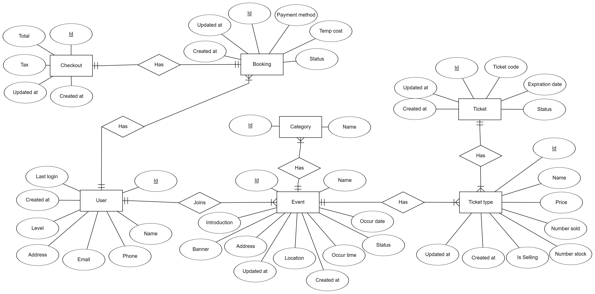

APPLYING AI MODELS TO GENERATE SQL QUERIES BASED ON USER SPECIFICATIONS
Table of Contents
Chapter 1: Building the Foundation for the ezTicket System: Database Specification
The database specification (DBS) is the backbone of the ezTicket online ticketing platform. Think of it as the blueprint that guides how data is organized and connected within the system. This chapter dives into the key components of this blueprint and how it plays a crucial role in the system’s functionality.
1.1 The ezTicket Data Model: A Visual Map
The ezTicket data model, often represented using an Entity-Relationship Diagram (ERD), provides a clear picture of the system’s data structure. It outlines the various entities (e.g., events, users, tickets), their attributes (e.g., event name, user email), and the relationships between them (e.g., user purchases ticket). This visual representation helps developers understand and work with the data effectively.

1.2 Building the DBS: A Step-by-Step Process
Creating a robust DBS involves a systematic process, from gathering and analyzing requirements to designing the data model, defining constraints, and thoroughly testing the specification. This process ensures that the DBS accurately reflects the system’s needs and maintains data integrity.
1.3 AI and the DBS: A Powerful Combination
The DBS isn’t just for developers. It can also be used to train AI models to automatically generate SQL queries, making data operations more efficient.
1.4 The ezTicket Database Structure: A Bird’s-Eye View
The ezTicket database is designed to handle a wide range of data related to events, users, tickets, orders, and payments. Its structure, outlined in the DBS, ensures that the system can manage complex ticketing operations seamlessly.
1.5 SQL Queries in Action: Putting the DBS to the Test
Illustrative SQL queries demonstrate how the DBS is applied in practice. These queries show how to retrieve, insert, update, and delete data within the ezTicket database, validating the specification’s accuracy and effectiveness.
By understanding the database specification, you gain valuable insights into the underlying structure that powers the ezTicket platform. This knowledge is essential for anyone involved in developing, maintaining, or using the system.
Chapter 2: Generating Realistic Data for the ezTicket System
Overview: The goal of this chapter is to generate realistic data for each entity type within the ezTicket database. This data is crucial for testing and evaluating the performance of SQL optimization methods. The data needs to be sufficiently large (at least 100,000 rows per table) and diverse to reflect real-world scenarios.
Challenges and Solutions: Due to the lack of sufficient real-world data, the team utilized Python programming language and libraries like Faker, Pandas, Random, Datetime, and String to create a source code for automatic data generation.
2.1 Data Categorization and Generation:
- Independent Data: Includes tables like User, Booking, Event, Ticket, and TicketType. This data can be generated randomly without requiring information from other tables.
- Dependent Data: Includes tables like TransactionDetail, BookingDetail, Checkout, and Category. This data requires information from other tables to maintain consistency and connections between data points.
2.2 Python Libraries:
- Faker: Generates complex random data such as names, addresses, phone numbers, and emails.
- Pandas: Handles and analyzes tabular data.
- Random, Datetime, String: Built-in Python libraries for generating random data and handling strings and time.
2.3 Results:
- Data is generated in Excel files.
- File format can be easily modified using the Pandas library.
- The number of data records can be adjusted through the dataNum file.
- The generated data will be invaluable for testing various scenarios and evaluating different SQL optimization methods.
By leveraging Python and its powerful libraries, the team successfully generated realistic and diverse data for the ezTicket system, laying a solid foundation for assessing and optimizing the system’s performance.